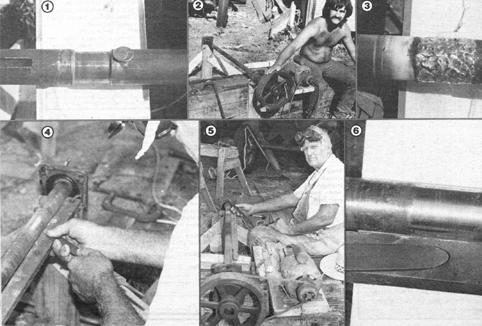

Where there's a wheel, there's a way. And with just a few more odds and ends, you can make . . .
I'm all for a bargain . . . so when I spotted an old seed cleaner that looked to be in pretty good shape, I couldn't resist picking it up for a song. But when I got it home, I began whistling a different tune. A bearing had turned on the main fan shaft, wearing a neat-but unwanted-groove deep into the steel rod
(see Photo 1).
Replacing the cold-rolled shaft would have cost as much as the implement itself, though, and I was determined to make a repair with the tools and materials I had on hand: an oxyacetylene torch, some brazing rod, and the contents of an impressive pile of wood and metal scraps I'd collected over the years.
What I lacked, however, was a lathe to turn down and smooth out the brass fill that I'd be using to build up the score. I decided to use the shaft itself-with the bearings and pulleys attached to it-as a crude setup that, I hoped, would spin "true" enough to permit me to do an accurate finishing job.
To start (see Photo 2), I made a solid base by laying a 10-foot section of 14" X 14" railroad lumber on top of, and at right angles to, a 2 X 12 plank. Then, using the position of the shaft's bearings as a guide, I nailed in a couple of 16-long 2 X 6 uprights-one to the side of the timber, and the other along the far end of the plank-to serve as mounts for the bearing flanges. (I had to add some wood scraps as spacers between the "outside" upright and the railroad beam, for extra strength.)
It took me only a few minutes to brace the "freestanding" upright with a couple of 1 X 4 stringers set at 45° angles. Then I constructed a motor mount by nailing 2-foot hunks of 2 X 6 across the top of the large timber, parallel to the shaft and about a foot or so from it. They also had to be "proud" by 10 or 12 inches on one side so the motor's pulley could line up with the shaft's.
The rest was simple: I bolted the shaft's bearing flanges to the ends of the uprights (the bearings on this machine were the self-aligning type, so everything didn't have to be perfectly lined up), dug a 1/3-horsepower electric motor out of my scrap pile, and borrowed one of the V-belts from the seed cleaner's drive system. Next, I bolted the motor on its 2 X 6 platform, with the belt stretched in position.
That done, I let 'er rip to see if the whole shebang would turn smoothly. It did, so I shut down, got out my torch, and filled the scored out groove with enough brass rod to more than pack the worn channel (as shown in Photo 3).
Another trip to my junk pile rewarded me with a 3/8" X 1" steel bar that was long enough to span the distance between the two wooden uprights. I nailed that in place on top of those posts-in line with the shaft (but not quite touching it)-to serve as a tool rest . . . and got to work.
The most convenient cutting tool I could come up with was a worn-out 10" file, which I modified by grinding its end into a sharp, round-nosed tip. I soon learned from experience to feed the tool very slowly into the built-up fill (see Photo 4), or it would grab on the rough spots . . . and I found, too, that it paid to clean up the file's cutting edge frequently. Naturally, I wore eye protection throughout the cutting and grinding processes.
As I began approaching the shaft's actual diameter, I checked my progress with a straightedge laid along the rod's length. Then I used the face of a fine file to dress the t:!1. and finished smoothing 'er up with some extra-fine emery cloth.
Since I didn't have a micrometer, I simply used the replacement bearing collar as a "fit to size" guide. When it slipped onto my repair work with a couple of moderate taps, I knew I was right in the ballpark.
Though many folks would probably have taken the job to a machine shop, I took pride in the fact that I'd done something with just about nothing (Photo 5) . . . and that my final product (see Photo 6) turned out to be as neat as any shopwork you'd care to see!
|
 |
|
|